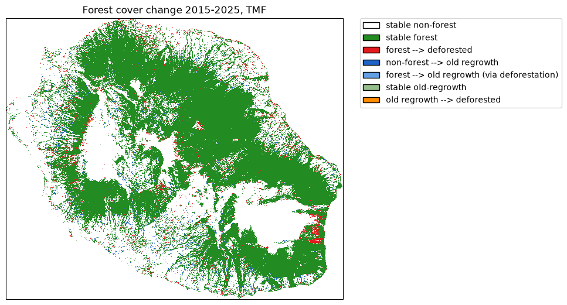

Loss and gain¶
Get forest cover change from TMF¶
The function .get_fcc_loss_gain() can be used to download forest cover change
from the Tropical Moist Forest product.
This function, contrary to get_fcc_loss() which accounts only for loss in the forest cover change, considers both forest loss and gain (or regrowth) to derive the forest cover change map.
We will use the Reunion Island (isocode “REU”) as a case study.
import os
import dask.array as da_
import ee
import geefcc
import matplotlib.pyplot as plt
from matplotlib.colors import ListedColormap
import matplotlib.patches as mpatches
import numpy as np
import cartopy.crs as ccrs
import rioxarray
from osgeo import gdal
import pandas as pd
from tabulate import tabulate
# Some convenient aliases
opj = os.path.join
# Initialize GEE
ee.Initialize(project="deforisk", opt_url="https://earthengine-highvolume.googleapis.com")
We want to estimate and map the forest cover change for the period 2015–2025, considering regrowth of at least 5 years as being forest, which is debatable [Bourgoin et al., 2024, Poorter et al., 2016].
# Download data from GEE
out_dir = "out_tmf_5yr"
ofile = opj(out_dir, "fcc_tmf.tif")
if not os.path.isfile(ofile):
geefcc.get_fcc_loss_gain(
aoi="REU",
year1=2015,
year2=2025,
min_years=5,
source="tmf",
tile_size=0.5,
crop_to_aoi=True,
parallel=True,
output_file=ofile,
)
get_fcc running, 3 tiles .
# Load data
fcc_tmf = rioxarray.open_rasterio(ofile)
fcc_tmf
<xarray.DataArray (band: 1, y: 1924, x: 2305)> Size: 4MB
[4434820 values with dtype=uint8]
Coordinates:
* band (band) int64 8B 1
* y (y) float64 15kB -20.87 -20.87 -20.87 ... -21.39 -21.39 -21.39
* x (x) float64 18kB 55.22 55.22 55.22 55.22 ... 55.84 55.84 55.84
spatial_ref int64 8B 0
Attributes:
AREA_OR_POINT: Area
_FillValue: 0
scale_factor: 1.0
add_offset: 0.0
long_name: fcc
Plot the forest cover change map¶
# Colors
cols=[(34, 139, 34, 255), (227, 26, 28, 255), (30, 100, 200, 255),
(100, 160, 230, 255), (150, 190, 140, 255), (255, 140, 0, 255)]
colors = [(1, 1, 1, 0)] # transparent white for 0
cmax = 255.0 # float for division
for col in cols:
col_class = tuple([i / cmax for i in col])
colors.append(col_class)
color_map = ListedColormap(colors)
# Labels
labels = {0: "stable non-forest", 1: "stable forest", 2: "forest --> deforested",
3: "non-forest --> old regrowth", 4: "forest --> old regrowth (via deforestation)",
5: "stable old-regrowth", 6: "old regrowth --> deforested"}
patches = [mpatches.Patch(facecolor=col, edgecolor="black",
label=labels[i]) for (i, col) in enumerate(colors)]
# Plot
fig = plt.figure()
ax = fig.add_axes([0, 0, 1, 1], projection=ccrs.PlateCarree())
raster_image = fcc_tmf.plot(ax=ax, cmap=color_map, add_colorbar=False)
plt.title("Forest cover change 2015-2025, TMF")
plt.legend(handles=patches, bbox_to_anchor=(1.05, 1), loc=2, borderaxespad=0.)
fig.savefig("tmf.png", bbox_inches="tight", dpi=100)
plt.close(fig)
{kind=link}

Reproject for area computation¶
We need to reproject the raster before performing area computation. We use projection UTM zone 40S (EPSG code 34740) for Reunion island.
ifile = opj(out_dir, "fcc_tmf.tif")
ofile = opj(out_dir, "fcc_tmf_utm.tif")
ds = gdal.Warp(ofile, ifile, xRes=30, yRes=30, dstSRS="EPSG:32740", resampleAlg="near",
targetAlignedPixels=True, creationOptions=["COMPRESS=DEFLATE"])
ds = None
Deforestation and regrowth estimates¶
We use functions bincount and dask arrays to compute the number of pixels per class and the corresponding area (in ha).
# Bincount with dask array
ifile = opj(out_dir, "fcc_tmf_utm.tif")
fcc_tmf_utm = rioxarray.open_rasterio(ifile, chunks={"x": 512, "y": 512})
# Get pixel resolution in meters
x_res, y_res = fcc_tmf_utm.rio.resolution()
pixel_area_m2 = abs(x_res) * abs(y_res)
# Count occurrences of each class (0-255) across all chunks in parallel
fcc_flat = fcc_tmf_utm.data.ravel()
counts = da_.bincount(fcc_flat, minlength=256).compute()
# Keep only classes that actually appear in the raster
present = np.nonzero(counts)[0]
# Create data frame
res_df = pd.DataFrame({
"category": present,
"label": list(labels.values()),
"count": counts[present],
})
# Convert pixel count to area in hectares (1 ha = 10,000 m^2)
res_df["area_ha"] = round(res_df["count"] * pixel_area_m2 / 10_000).astype(int)
# Export
res_df.to_csv(opj("fcc_statistics.csv"), index=False)
tabulate(res_df, headers=res_df.columns, tablefmt="orgtbl", showindex=False)
category |
label |
count |
area_ha |
|---|---|---|---|
0 |
stable non-forest |
2672678 |
240541 |
1 |
stable forest |
1387668 |
124890 |
2 |
forest –> deforested |
67986 |
6119 |
3 |
non-forest –> old regrowth |
49882 |
4489 |
4 |
forest –> old regrowth (via deforestation) |
1057 |
95 |
5 |
stable old-regrowth |
14629 |
1317 |
6 |
old regrowth –> deforested |
946 |
85 |
We can then estimate gross loss, gross gain and net loss in forest cover change for the period 2015–2025. Category 4 (forest –> old regrowth via deforestation) is accounted for both gross loss and gain.
forest_t1 = res_df.loc[[1, 2, 4, 5, 6], "area_ha"].sum()
forest_t2 = res_df.loc[[1, 3, 4, 5], "area_ha"].sum()
gross_loss = - res_df.loc[[2, 4, 6], "area_ha"].sum()
gross_gain = res_df.loc[[3, 4], "area_ha"].sum()
lossgain_df = pd.DataFrame({
"label": ["forest_t1", "forest_t2", "gross loss", "gross gain", "net loss"],
"area_ha": [forest_t1, forest_t2, gross_loss, gross_gain, gross_gain + gross_loss],
})
time = 2025 - 2015
lossgain_df["annual_change_ha"] = (lossgain_df["area_ha"] / time).round().astype(int)
ratio = lossgain_df["area_ha"] / forest_t1
lossgain_df["annual_change_perc"] = round(100 * (1 - pow((1 - ratio), 1 / time)), 2)
lossgain_df.iloc[:2, 2:4] = np.nan
# Export
res_df.to_csv(opj("loss_gain_statistics.csv"), index=False)
tabulate(lossgain_df, headers=lossgain_df.columns, tablefmt="orgtbl", showindex=False)
label |
area_ha |
annual_change_ha |
annual_change_perc |
|---|---|---|---|
forest_t1 |
132506 |
nan |
nan |
forest_t2 |
130791 |
nan |
nan |
gross loss |
-6299 |
-630 |
-0.47 |
gross gain |
4584 |
458 |
0.35 |
net loss |
-1715 |
-172 |
-0.13 |
When considering regrowth of at least 5 years, which is very short for forest recovery [Bourgoin et al., 2024], the gain (458 ha/yr) compensates the forest cover loss (-630 ha/yr), and the net deforestation is small (-172 ha/yr). But if we consider regrowth of at least 10 years as being forest (min_years=10 in function get_fcc_loss_gain), the gain is much smaller (202 ha/yr) and the net deforestation much higher (-427 ha/yr corresponding to -0.32 %/yr).
References¶
C. Bourgoin, G. Ceccherini, M. Girardello, C. Vancutsem, V. Avitabile, P. S. A. Beck, R. Beuchle, L. Blanc, G. Duveiller, M. Migliavacca, G. Vieilledent, A. Cescatti, and F. Achard. Human degradation of tropical moist forests is greater than previously estimated. Nature, 631(8021):570–576, July 2024. doi:10.1038/s41586-024-07629-0.
L. Poorter, F. Bongers, T. M. Aide, A. M. Almeyda Zambrano, P. Balvanera, J. M. Becknell, V. Boukili, P. H. S. Brancalion, E. N. Broadbent, R. L. Chazdon, D. Craven, J. S. de Almeida-Cortez, G. A. L. Cabral, B. H. J. de Jong, J. S. Denslow, D. H. Dent, S. J. DeWalt, J. M. Dupuy, S. M. Durán, M. M. Espírito-Santo, M. C. Fandino, R. G. César, J. S. Hall, J. L. Hernandez-Stefanoni, C. C. Jakovac, A. B. Junqueira, D. Kennard, S. G. Letcher, J.-C. Licona, M. Lohbeck, E. Marín-Spiotta, M. Martínez-Ramos, P. Massoca, J. A. Meave, R. Mesquita, F. Mora, R. Muñoz, R. Muscarella, Y. R. F. Nunes, S. Ochoa-Gaona, A. A. de Oliveira, E. Orihuela-Belmonte, M. Peña-Claros, E. A. Pérez-García, D. Piotto, J. S. Powers, J. Rodríguez-Velázquez, I. E. Romero-Pérez, J. Ruíz, J. G. Saldarriaga, A. Sanchez-Azofeifa, N. B. Schwartz, M. K. Steininger, N. G. Swenson, M. Toledo, M. Uriarte, M. van Breugel, H. van der Wal, M. D. M. Veloso, H. F. M. Vester, A. Vicentini, I. C. G. Vieira, T. V. Bentos, G. B. Williamson, and D. M. A. Rozendaal. Biomass resilience of neotropical secondary forests. Nature, 530(7589):211–214, February 2016. doi:10.1038/nature16512.